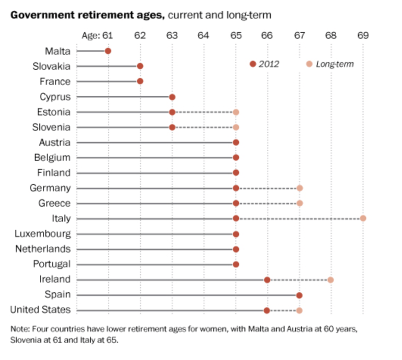
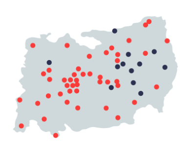
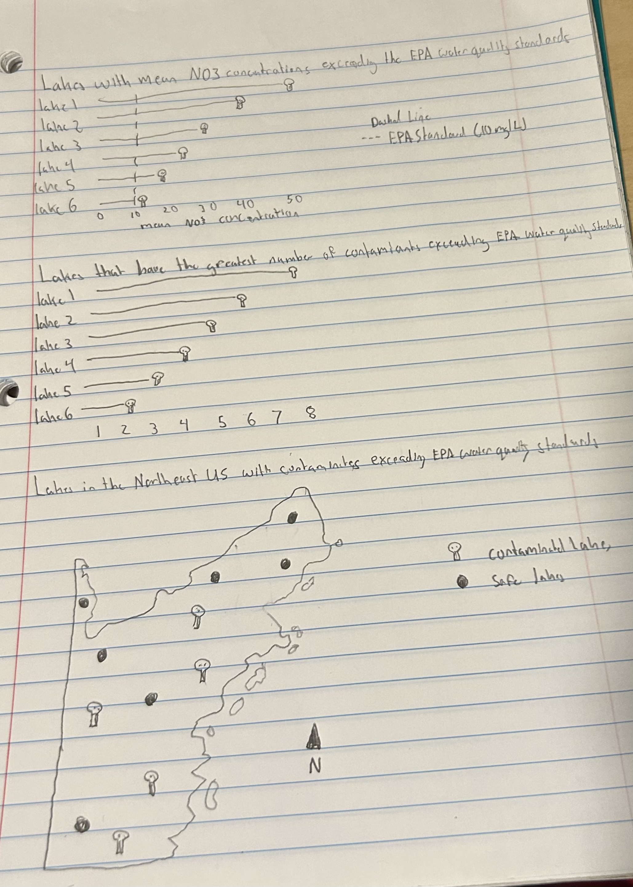
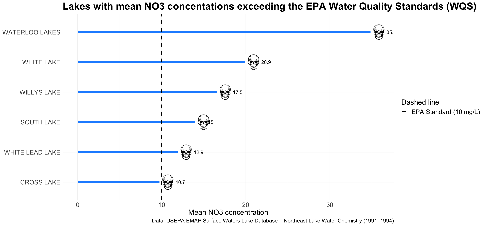
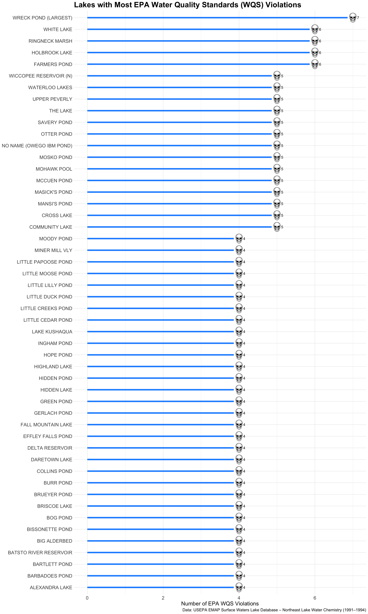
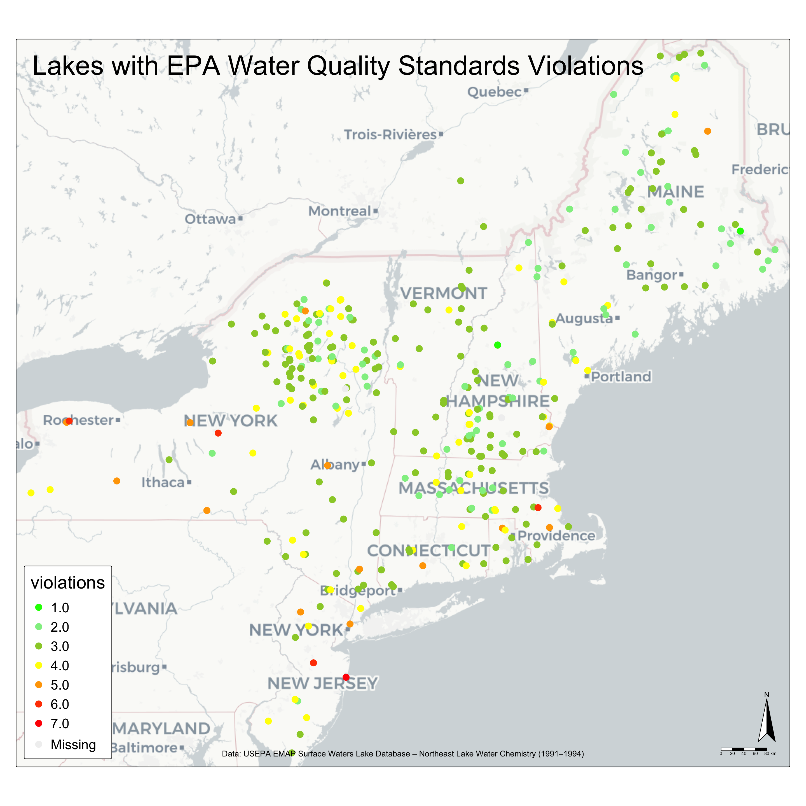

FPM #3: Drafting Visualizations
Assigned Wed 02/11/2026 | Due Sun 02/22/2026
III. Some pre-planning
Before you start drafing your viz, answer the following questions:
- Restate the questions you hope to answer with your inforgraphic. This should include one overarching question (think of this as driving the overall theme of your infographic) and at least three subquestions (each of which will be addressed by your infographic’s component visualizations). Have these questions changed at all since FPM #1? If yes, how so?
- Which lakes in the northeast United states have contaminant concentrations above the EPA Water Quality Standards?
- What lakes in the Northeast United States have a mean nitrate (NO3) concentration exceeding the EPA water quality standard of 10 mg/L?
- Which lakes have the greatest number of contaminants exceeding EPA Water Quality Standards?
- Where are the lakes that have contaminant concentrations above the EPA Water Quality Standards located? Are they close together and possibly being contaminated by the same source?
- Yes, these questions have changed. I originally wanted to look at NH3, but my data set only has NH4, so I switched to NO3. Also, on my FPM #1 I only listed 2 subquestions, so I added : Where are the lakes that have contaminant concentrations above the EPA Water Quality Standards located? Are they close together and possibly being contaminated by the same source?
- Explain which variables from your data set(s) you will use to answer the above questions, and how.
sub question 1:
NO3andLAKENAMEwill be used to answer this question. I will group byLAKENAMEand calculate the meanNO3concentration for each lake.sub question 2:
NH4, NO3, NTL, PTL, CHLA, CL, PHEQ, TURBandLAKENAMEwill be used to answer this question. I will group byLAKENAMEand calculate the meanNH4, NO3, NTL, PTL, CHLA, CL, PHEQ, TURBconcentrations for each lake. I will then add columns that will have the EPA water quality standard for each contaminate. I will then use a for loop to see which contaminate surpasses the quality standard and will count the amount of contaminates suprass the quality standard.sub question 3:
LAT_DD, LON_DDandLAKENAMEwill be used to answer this question. I will plot all the lakes and color the lakes that have ontaminant concentrations above the EPA Water Quality Standards red and leave the safe lakes blue.
- In FPM #2, you created some exploratory data viz to better understand your data. You may already have some ideas of how you plan to formally visualize your data, but it’s incredibly helpful to look at visualizations by other creators for inspiration. Find at least two data visualizations that you could (potentially) borrow / adapt pieces from. Download and embed them into your drafting-viz.qmd file, and explain which elements you might borrow (e.g. the graphic form, legend design, layout, etc.).
the graphic form, legend design, layout, etc.
I will be using the lollipop graph for my first 2 sub-questions. It is a great and clean way to show multiple lakes contaminate concentrations. I will be changing the dots to make them another icon to make it more poweful of a message. I will not be using a legend in this plot.

I will be using a map like this for sub-question 3. I will implement a different type of basemap that has borders and shows state lines. I will definitely be using a basemap that has a plain layout. I will be keeping the coloring of sites also. I will be adding a legend that tells you which colors correspond to what.
IV. Hand-draw your anticipated visualizations
Before you begin coding, it’s a super useful practice to sketch out your anticipated visualizations by hand. This Medium article does a great job summarizing why this step matters.
- Hand-draw your anticipated visualizations, then take a photo of your drawing(s) and embed it in your rendered drafting-viz.qmd file – note that these are not exploratory visualizations, but rather your plan for your final visualizations that you will eventually polish and include in your infographic.

V. Recreate your hand-drawn visualizations using code
Mock up all of your hand drawn visualizations using code. We understand that you will continue to iterate on these into FPM #4 (particularly after receiving feedback), but by the end of FPM #3, you should:
have your data plotted (if you’re experimenting with a graphic form(s) that was not explicitly covered in class, we understand that this may take some more time to build; you should have as much put together as possible) use appropriate strategies to highlight / focus attention on a clear message include appropriate text such as titles, captions, axis labels (note: you may eventually convert some text, such as titles and captions, into annotations or text elements on your infographic; it’s still helpful to include titles, etc. on these stand-alone visualizations now, to provide your peer reviewers and instructional team with necessary context) experiment with colors and typefaces / fonts create a presentable / aesthetically-pleasing theme (e.g. (re)move gridlines / legends as appropriate, adjust font sizes, etc.)
# Load in libraries
library(here)here() starts at /Users/austinmartinez/Documents/MEDS/EDS-240/eds240-infographiclibrary(tidyverse)Warning: package 'ggplot2' was built under R version 4.5.2Warning: package 'tibble' was built under R version 4.5.2Warning: package 'tidyr' was built under R version 4.5.2Warning: package 'readr' was built under R version 4.5.2Warning: package 'purrr' was built under R version 4.5.2── Attaching core tidyverse packages ──────────────────────── tidyverse 2.0.0 ──
✔ dplyr 1.1.4 ✔ readr 2.1.6
✔ forcats 1.0.0 ✔ stringr 1.6.0
✔ ggplot2 4.0.1 ✔ tibble 3.3.1
✔ lubridate 1.9.4 ✔ tidyr 1.3.2
✔ purrr 1.2.1 ── Conflicts ────────────────────────────────────────── tidyverse_conflicts() ──
✖ dplyr::filter() masks stats::filter()
✖ dplyr::lag() masks stats::lag()
ℹ Use the conflicted package (<http://conflicted.r-lib.org/>) to force all conflicts to become errorslibrary(ggplot2)
library(ggimage)Warning: package 'ggimage' was built under R version 4.5.2library(sf)Warning: package 'sf' was built under R version 4.5.2Linking to GEOS 3.13.0, GDAL 3.8.5, PROJ 9.5.1; sf_use_s2() is TRUElibrary(tmap)# Read in Data
lake_data <- read_csv(here("data/EPA_EMAP_CHEM.csv"))Rows: 500 Columns: 50
── Column specification ────────────────────────────────────────────────────────
Delimiter: ","
chr (25): LAKENAME, LAKE_ID, ANCF, CAF, CLF, COLORF, COM_FLD, COM_LAB, CONDF...
dbl (25): PHEQ, DOC, CA, CL, ANC, CHLA, COLOR, COND, DEP_SAMP, DIC, K, LAT_D...
ℹ Use `spec()` to retrieve the full column specification for this data.
ℹ Specify the column types or set `show_col_types = FALSE` to quiet this message.- What lakes in the Northeast United States have a mean nitrate (NO3) concentration exceeding the EPA water quality standard of 10 mg/L?# Find the mean NO3 value for each lake
grouped <- lake_data |>
group_by(LAKENAME) |>
summarize(mean_NO3 = mean(NO3))
# Convert units to mg/L
grouped$mean_NO3 <- grouped$mean_NO3 * 0.062
# Read in skull image
skull_url <- "https://th.bing.com/th/id/OIP.5nP8u8TbELdXKSszVmjoVQHaHa?w=183&h=183&c=7&r=0&o=7&dpr=2&pid=1.7&rm=3"
# Create figure
grouped |>
arrange(desc(mean_NO3)) |>
slice_head(n = 6) |>
mutate(skull_img = skull_url) |>
ggplot(aes(x = reorder(LAKENAME, mean_NO3),
y = mean_NO3)) +
geom_linerange(aes(ymin = 0, ymax = mean_NO3), color = "dodgerblue", size = 2) +
geom_image(aes(image = skull_img), size = 0.09) +
geom_text(aes(label = signif(mean_NO3, 3), hjust = -0.8)) +
geom_hline(aes(yintercept = 10, linetype = "EPA Standard (10 mg/L)"), color = "black", size = 1) +
scale_linetype_manual(values = c("EPA Standard (10 mg/L)" = "dashed")) +
labs(x = "Lakes",
y = "Mean NO3 concentration",
title = "Lakes with mean NO3 concentations exceeding the EPA Water Quality Standards (WQS)",
linetype = "Dashed line",
caption = "Data: USEPA EMAP Surface Waters Lake Database – Northeast Lake Water Chemistry (1991–1994)") +
coord_flip() +
theme_minimal() +
theme(axis.title.y = element_blank()) +
theme(
text = element_text(size = 18),
axis.text = element_text(size = 14),
axis.title = element_text(size = 16),
plot.title = element_text(size = 22, face = "bold"),
legend.text = element_text(size = 14),
legend.title = element_text(size = 16),
plot.caption = element_text(size = 12)
)Warning: Using `size` aesthetic for lines was deprecated in ggplot2 3.4.0.
ℹ Please use `linewidth` instead.
- Which lakes have the greatest number of contaminants exceeding EPA Water Quality Standards?
# Find the mean NH4, NO3, NTL, PTL, CHLA, CL, PHEQ, TURB value for each lake
grouped_2 <- lake_data |>
group_by(LAKENAME) |>
summarize(
mean_NH4 = mean(NH4, na.rm = TRUE),
mean_NO3 = mean(NO3, na.rm = TRUE),
mean_NTL = mean(NTL, na.rm = TRUE),
mean_PTL = mean(PTL, na.rm = TRUE),
mean_CHLA = mean(CHLA, na.rm = TRUE),
mean_CL = mean(CL, na.rm = TRUE),
mean_PHEQ = mean(PHEQ, na.rm = TRUE),
mean_TURB = mean(TURB, na.rm = TRUE),
LAT_DD = mean(LAT_DD, na.rm = TRUE),
LON_DD = mean(LON_DD, na.rm = TRUE)
)
# Convert units to match EPA WQS
# NH4: microequivalentsPerLiter to mg/L
grouped_2$mean_NH4 <- grouped_2$mean_NH4 * 0.01804
# NO3: microequivalentsPerLiter to mg/L
grouped_2$mean_NO3 <- grouped_2$mean_NO3 * 0.062
# NTL: microgramsPerLiter to mg/L
grouped_2$mean_NTL <- grouped_2$mean_NTL / 1000
# PTL: microgramsPerLiter to mg/L
grouped_2$mean_PTL <- grouped_2$mean_PTL / 1000
# CL: microequivalentsPerLiter to mg/L
grouped_2$mean_CL <- grouped_2$mean_CL * 0.03545
# Add EPA WQS threshold columns
grouped_2$wqs_NH4 <- 0.1 # mg/L (lower protective limit)
grouped_2$wqs_NO3 <- 10 # mg/L
grouped_2$wqs_NTL <- 1 # mg/L (natural level)
grouped_2$wqs_PTL <- 0.10 # mg/L
grouped_2$wqs_CHLA <- 5 # μg/L (good water quality threshold)
grouped_2$wqs_CL <- 230 # mg/L
grouped_2$wqs_PHEQ <- 7.0 # pH (neutral midpoint; range is 6.5-8.5)
grouped_2$wqs_TURB <- 5 # NTU (aquatic standard)
# Count violations for each lake
grouped_2$violations <-
(grouped_2$mean_NH4 >= grouped_2$wqs_NH4) +
(grouped_2$mean_NO3 >= grouped_2$wqs_NO3) +
(grouped_2$mean_NTL >= grouped_2$wqs_NTL) +
(grouped_2$mean_PTL >= grouped_2$wqs_PTL) +
(grouped_2$mean_CHLA >= grouped_2$wqs_CHLA) +
(grouped_2$mean_CL >= grouped_2$wqs_CL) +
((grouped_2$mean_PHEQ < 6.5) | (grouped_2$mean_PHEQ > 8.5)) +
(grouped_2$mean_TURB >= grouped_2$wqs_TURB)
# Read in skull image
skull_url <- "https://th.bing.com/th/id/OIP.5nP8u8TbELdXKSszVmjoVQHaHa?w=183&h=183&c=7&r=0&o=7&dpr=2&pid=1.7&rm=3"
# Create figure
grouped_2 |>
arrange(desc(violations)) |>
slice_head(n = 50) |>
mutate(skull_img = skull_url) |>
ggplot(aes(x = reorder(LAKENAME, violations),
y = violations)) +
geom_linerange(aes(ymin = 0, ymax = violations), color = "dodgerblue", size = 2) +
geom_image(aes(image = skull_img), size = 0.018) +
geom_text(aes(label = violations, hjust = -2)) +
labs(x = "Lakes",
y = "Number of EPA WQS Violations",
title = "Lakes with Most EPA Water Quality Standards (WQS) Violations",
caption = "Data: USEPA EMAP Surface Waters Lake Database – Northeast Lake Water Chemistry (1991–1994)") +
coord_flip() +
theme_minimal() +
theme(axis.title.y = element_blank()) +
theme(
text = element_text(size = 18),
axis.text = element_text(size = 14),
axis.title = element_text(size = 16),
plot.title = element_text(size = 22, face = "bold"),
legend.text = element_text(size = 14),
legend.title = element_text(size = 16),
plot.caption = element_text(size = 12)
)
- Where are the lakes that have contaminant concentrations above the EPA Water Quality Standards located? Are they close together and possibly being contaminated by the same source?# Convert grouped_2 to spatial object
grouped_2_sf <- st_as_sf(grouped_2,
coords = c("LON_DD", "LAT_DD"),
crs = 4326)
# Create tmap
tm_shape(grouped_2_sf) +
tm_dots(col = "violations",
size = 0.8,
palette = c("green", "lightgreen", "yellowgreen", "yellow", "orange", "orangered", "red"),
title = "Number of WQS Violations") +
tm_basemap("CartoDB.Positron") +
tm_layout(title = "Lakes with EPA Water Quality Standards Violations",
title.size = 3,
legend.title.size = 2,
legend.text.size = 1.5,
legend.outside = TRUE,
legend.position = c("left", "bottom")) +
tm_credits("Data: USEPA EMAP Surface Waters Lake Database – Northeast Lake Water Chemistry (1991–1994)",
position = c("center", "bottom"),
size = 0.9) +
tm_compass(size = 5) +
tm_scale_bar()── tmap v3 code detected ───────────────────────────────────────────────────────[v3->v4] `tm_tm_dots()`: migrate the argument(s) related to the scale of the
visual variable `fill` namely 'palette' (rename to 'values') to fill.scale =
tm_scale(<HERE>).
[v3->v4] `tm_dots()`: use 'fill' for the fill color of polygons/symbols
(instead of 'col'), and 'col' for the outlines (instead of 'border.col').
[tm_dots()] Argument `title` unknown.
[v3->v4] `tm_layout()`: use `tm_title()` instead of `tm_layout(title = )`
! `tm_scale_bar()` is deprecated. Please use `tm_scalebar()` instead.
Multiple palettes called "green" found: "kovesi.green", "tableau.green". The first one, "kovesi.green", is returned.
VI. Answer a few last questions about your work and progress
- What are the key insights you want your infographic to communicate, and how will your design choices help highlight and support those messages?
- I want to communicate that these contaminants could be very harmful and which lakes people should be weary about. My infographic will show which lakes to avoid and just how many contaminates each lake has.
- What challenges did you encounter or anticipate encountering as you continue to build / iterate on your visualizations in R? If you struggled with mocking up any of your three visualizations, describe those challenges here.
- My biggest challenge was with subquestion 2. Only because the amount of work that went into it i had to do so many steps and correctly standardize units. The visualization its self wasn’t difficult to make, but the prep took a lot of time.
- What ggplot extension tools / packages do you need to use to build your visualizations? Are there any that we haven’t covered in class that you’ll be learning how to use for your visualizations?
- I had to use theme() and
ggimage.ggimagewas not taught in class. I also had to use tmap to make my map. This wasn’t taught in data viz, but I learned it from Annie in Geospatial.
- What feedback do you need from the instructional team and / or your peers to ensure that your intended message and key insights are clear?
- I need help on my map mainly how to make it aesthetically pleasing. This map is ugly I want a cleaner gray background to make points stand out. I also want my points to be different colors